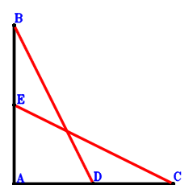
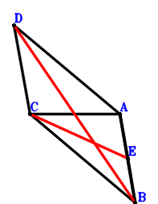
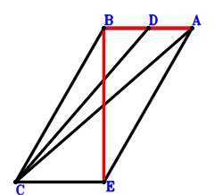

Exercise 3： Let D, E be the midpoints of AC, BA, respectively. AC=BA. Prove that BD=EC.

\(\because \) D is the midpoint of AC \(\therefore \small\overrightarrow{AD}=\dfrac{\small\overrightarrow{AC}}{2}\).\(\because \) E is the midpoint of BA \(\therefore \small\overrightarrow{AE}=\dfrac{\small\overrightarrow{AB}}{2}\).\(\because \) AC=BA \( \therefore- \small\overrightarrow{AB}^{2} + \small\overrightarrow{AC}^{2}=0.\)In conclusion, \(\small\overrightarrow{DB}^{2} - \small\overrightarrow{EC}^{2}=\left(\small\overrightarrow{AB} - \small\overrightarrow{AD}\right)^{2} - \left(\small\overrightarrow{AC} - \small\overrightarrow{AE}\right)^{2}=- \left(- \dfrac{\small\overrightarrow{AB}}{2} + \small\overrightarrow{AC}\right)^{2} + \left(\small\overrightarrow{AB} - \dfrac{\small\overrightarrow{AC}}{2}\right)^{2}=\dfrac{3 \small\overrightarrow{AB}^{2}}{4} - \dfrac{3 \small\overrightarrow{AC}^{2}}{4}=0\), that is, BD=EC.
Exercise 4： Let BCDA be a parallelogram. E is the midpoint of AB. CA=AB. Prove that DB=2CE.

\(\because \) BCDA is a parallelogram \(\therefore \small\overrightarrow{AD}=- \small\overrightarrow{AB} + \small\overrightarrow{AC}\).\(\because \) E is the midpoint of AB \(\therefore \small\overrightarrow{AE}=\dfrac{\small\overrightarrow{AB}}{2}\).\(\because \) CA=AB \( \therefore- \small\overrightarrow{AB}^{2} + \small\overrightarrow{AC}^{2}=0.\)In conclusion, \(\small\overrightarrow{BD}^{2} - 4 \small\overrightarrow{EC}^{2}=\left(- \small\overrightarrow{AB} + \small\overrightarrow{AD}\right)^{2} - 4 \left(\small\overrightarrow{AC} - \small\overrightarrow{AE}\right)^{2}=\left(- 2 \small\overrightarrow{AB} + \small\overrightarrow{AC}\right)^{2} - 4 \left(- \dfrac{\small\overrightarrow{AB}}{2} + \small\overrightarrow{AC}\right)^{2}=3 \small\overrightarrow{AB}^{2} - 3 \small\overrightarrow{AC}^{2}=0\), that is, DB=2CE.
Exercise 6： Let B, D be the midpoints of EC, BA, respectively. \(CA=\dfrac{2 \sqrt{3}}{3}DC\). Prove that \(EA=\sqrt{3}BA\).
\(\because \) D is the midpoint of BA \(\therefore \small\overrightarrow{AD}=\dfrac{\small\overrightarrow{AB}}{2}\).\(\because \) B is the midpoint of EC \(\therefore \small\overrightarrow{AE}=2 \small\overrightarrow{AB} - \small\overrightarrow{AC}\).\(\because \) \(CA=\dfrac{2 \sqrt{3}}{3}DC\) \( \therefore3 \small\overrightarrow{AC}^{2} - 4 \small\overrightarrow{DC}^{2}=3 \small\overrightarrow{AC}^{2} - 4 \left(\small\overrightarrow{AC} - \small\overrightarrow{AD}\right)^{2}=3 \small\overrightarrow{AC}^{2} - 4 \left(- \dfrac{\small\overrightarrow{AB}}{2} + \small\overrightarrow{AC}\right)^{2}=- \small\overrightarrow{AB}^{2} + 4 \small\overrightarrow{AB} \cdot \small\overrightarrow{AC} - \small\overrightarrow{AC}^{2}=0.\)In conclusion, \(- 3 \small\overrightarrow{AB}^{2} + \small\overrightarrow{AE}^{2}=- 3 \small\overrightarrow{AB}^{2} + \left(2 \small\overrightarrow{AB} - \small\overrightarrow{AC}\right)^{2}=\small\overrightarrow{AB}^{2} - 4 \small\overrightarrow{AB} \cdot \small\overrightarrow{AC} + \small\overrightarrow{AC}^{2}=0\), that is, \(EA=\sqrt{3}BA\).
Exercise 9： Let CEAB be a parallelogram. D is the midpoint of BA. \(CA=\dfrac{2 \sqrt{3}}{3}CD\). Prove that \(EB=\sqrt{3}BA\).

\(\because \) D is the midpoint of BA \(\therefore \small\overrightarrow{AD}=\dfrac{\small\overrightarrow{AB}}{2}\).\(\because \) CEAB is a parallelogram \(\therefore \small\overrightarrow{AE}=- \small\overrightarrow{AB} + \small\overrightarrow{AC}\).\(\because \) \(CA=\dfrac{2 \sqrt{3}}{3}CD\) \( \therefore3 \small\overrightarrow{AC}^{2} - 4 \small\overrightarrow{DC}^{2}=3 \small\overrightarrow{AC}^{2} - 4 \left(\small\overrightarrow{AC} - \small\overrightarrow{AD}\right)^{2}=3 \small\overrightarrow{AC}^{2} - 4 \left(- \dfrac{\small\overrightarrow{AB}}{2} + \small\overrightarrow{AC}\right)^{2}=- \small\overrightarrow{AB}^{2} + 4 \small\overrightarrow{AB} \cdot \small\overrightarrow{AC} - \small\overrightarrow{AC}^{2}=0.\)In conclusion, \(- 3 \small\overrightarrow{AB}^{2} + \small\overrightarrow{BE}^{2}=- 3 \small\overrightarrow{AB}^{2} + \left(- \small\overrightarrow{AB} + \small\overrightarrow{AE}\right)^{2}=- 3 \small\overrightarrow{AB}^{2} + \left(- 2 \small\overrightarrow{AB} + \small\overrightarrow{AC}\right)^{2}=\small\overrightarrow{AB}^{2} - 4 \small\overrightarrow{AB} \cdot \small\overrightarrow{AC} + \small\overrightarrow{AC}^{2}=0\), that is, \(EB=\sqrt{3}BA\).